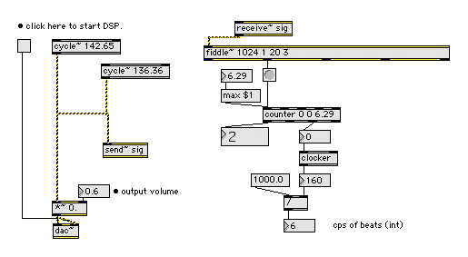

Introduction
This article describes a project to sample, analyze, and create a composition of computer music simulating the gamelan instruments Kemong, Kempli, Jegogan, Gong, Calung, Gangsa, and Reyong. Central to the project was analyzing pitch frequencies, and simulating the harmonic beating which takes place between the Sahnsi and Polos of several instruments. The procedure for sampling the instruments, and also utilizing a software synthesis application to analyze the sounds will be described below. A composition by Akito Van Troyer employing additive synthesis techniques was created, and details of the composition implementation including novel procedures for employing table look-up functions to control rhythm, tempo, and duration will be explained.
I. Sampling and Analysis
Gamelan Instrument Samples
In order to analyze pitch frequencies of the gamelan instruments employed for the project, and to determine the rate of harmonic beating between paired instruments, recordings were made and samples were collected. The recording procedure included the use of two microphones for source stereo recording, at 96KHz, 16 bit. Later the sample files were downsampled to 44.1KHz, 16bit for analysis purposes. Each instrument was struck and allowed to sustain for the duration of the recording. Instruments were recorded separately (Sahnsi or Polos), together (Sahnsi and Polos), and in stereo and mono.Figure 1. Image of Balinese Gamelan
Gangsa instruments (Sahnsi and Polos)
Analysis
The purpose of sampling the instruments was to discover the actual pitches as frequencies as well as the frequency of harmonic beating between the paired instruments. While tuning and pitch scales of gamelan instruments fall within traditional patterns, Christine Southworth has noted that the beating rates vary, both within each gamelan and between different gamelans(SOUTHWORTH). In addition, tunings of the various Indonesian gamelans generally differ in both starting frequencies and subsequent intervals (SOUTHWORTH).After sampling the instruments, the attack caused by striking the instrument was removed using an audio editor, resulting in a sample which was the sustain portion of the sound minus the attack transient. It was noted earlier the source 96KHz samples were downsampled to 44.1KHz for purposes of analysis.
Frequency analysis was performed employing the external MaxMSP1 fiddle~ object (Puckette, 1998: MSP port by Ted Apel, David Zicarelli) in a patch created by Akito Van Troyer. The fiddle~ object, a pitch estimator and sinusoidal peak finder, can be employed to report frequencies for partials.
Figure2 shows a Gangsa sample being analyzed in real-time. Pitch is accumulated using midi pitch numbers, then the midi number is converted to frequency in hertz using the mtof object. The fiddle~ reported midi pitch numbers are shown in the Max window on the right side of the image, while the frequency in hertz is reported in the large number box near the left center of the image.
Figure2. Van Troyer's Max/MSP patch to
analyze gamelan samples.
The fiddle~ object can also be used to verify rates for harmonic beating. The rate of harmonic beating can be deduced as the result of the difference between two closely related frequencies which cause the beating. Figure3 shows adapting a "cooked" output of fiddle~ to verify beat frequencies using the Max objects counter and clocker.

Figure3. Max/MSP fiddle~ object used
to verify the rate of harmonic beating.
Appendix I shows the complete list of pitch frequencies analyzed, as well the beat rates observed, for both Sahnsi and Polos of the gamelan instruments.
II. Composition
The spectral analysis data of gamelan instruments showed that additive
synthesis could be employed to simulate the basic sound of the
instruments. Additive synthesis was employed using Csound by summing
instances of the oscili opcode (see below). Partial content was
heightened by adjusting partials and amplitudes as a creative component
in the piece. The heightened partial content was selected, utilizing
Max/MSP filters prior to analysis by fiddle~ in the patch from Fig.2
above, in order to resonate particular frequencies2.
Partial frequencies reported by fiddle~ were converted to ratios and
placed in Csound ftables (indicated by -2, below). Gen2 transfers data
from immediate pfields into a function table. The partial ratios below
(1, 2.7, 4.63, etc.) do not represent a synthesized waveform, but
simply a list of numbers as ratios (for a complete view of the Csound
unified file see the attached Gamelan_Study1.csd in VanTroyerExs.zip ). ;GangsaThe use of the opcode oscili allows for changing and summing the various partial numbers at the k-rate, which is shown below as the input k-rate variable 'kpit'. The variable kpit is reading from zack space location 12. Code not shown was used to convert the ratio numbers back to cycles per second before writing to zack space (see the Gamelan_Study1.csd file in VanTroyerExs.zip ).
gangsa harmonic partial
gitmap5 ftgen 6, 0, 8, -2, 1, 2.7, 4.63, 5, 8.2, 11.3, 0, 0;
;partial str
gitmap15 ftgen 16, 0, 8, -2, 1, 0.13717, 0.04665, 0.04, 0.01487, 0.00783, 0, 0
kpit zkr 12
ktimb zkr 1
a1 oscili klp, kpit, iosc ; fundamental
a2 oscili klp*ks2, (kpit*kp2)*ktimb, iosc ; first harmonic
a3 oscili klp*ks3, (kpit*kp3)*ktimb, iosc ; second
a4 oscili klp*ks4, (kpit*kp4)*ktimb, iosc
a5 oscili klp*ks5, (kpit*kp5)*ktimb, iosc
a6 oscili klp*ks6, (kpit*kp6)*ktimb, iosc
Csound code excerpt from instr 4;
Jegogan.
Beat frequencies between Sahnsi and Polos were created using a second Csound instrument, similar to the first, but having a slight pitch offset. The k-rate variable 'kbet' (below) shows the addition of a six hertz offset.
kpit zkr 12
ktimb zkr 1
kbet = 6
a1 oscili klp, kpit+abet, iosc ; fundamental
a2 oscili klp*ks2, ((kpit*kp2)*ktimb)+kbet,iosc ; first harmonic
a3 oscili klp*ks3, ((kpit*kp3)*ktimb)+kbet, iosc ; second
a4 oscili klp*ks4, ((kpit*kp4)*ktimb)+kbet, iosc
a5 oscili klp*ks5, ((kpit*kp5)*ktimb)+kbet, iosc
a6 oscili klp*ks6, ((kpit*kp6)*ktimb)+kbet, iosc
Csound code excerpt from instr 5;
Jegogan.
Considerable effort was spent on algorithmic design to ensure that Csound's score file entries were kept to a minimum3. Since Csound receives events from the score which include start time, and duration; note lengths or durations are normally part of the score.
In Van Troyer's design, however, rhythms are generated as samples employing ftables. Table 162, for example, which contains zeros and ones, is read by a phasor. When the phasor encounters a '1', a note is triggered. The speed of the phasor and the number of zeros between the ones determines a micro-rhythm which is repeated as one of the basic rhythmic cells during a formal section of the piece4.
gitmap162 ftgen 162, 0, 32, -2, 1, 0, 0, 0, 1, 0, 0, 0, 0, 0, 0, 0, 1, 0, 0, 0, 1, 0, 0, 0, 0, 0, 0, 0, 1, 0, 0, 0, 0, 0, 0, 0
The duration of formal sections, in which different instruments are sounding, or changing tempos, or amplitude over the duration of that section is determined by a hierarchical system of sequencing ftables5. In other words, ftables call ftables, which contain values. Hence the large number of ftables utilized in the composition. Global control of the tempo of the formal sections of the piece is determined by the linseg opcode which sends terraced envelope step values to instruments which also contain phasors. The speed of the phasors in several instruments, each representing a different gamelan instrument, is controlled globally in that manner. Dynamics are also controlled globally through a k-rate value used as the amplitude input values for the oscili opcodes6.
Although the piece is possible to render in real-time in Csound by adjusting various header parameters (see "Csound Users Manual", "Using Csound, Optimizing Audio I/O Latency"), due to the heavy demands on the processor, the piece has been rendered to an mp3 for listening7 (see attached Gamelan_Study1.mp3 in VanTroyerExs.zip ).
III. Conclusion
Csound is an effective software synthesis application for employing
additive synthesis techniques to simulate the sound of gamelan
instruments. In one sense, the Balinese Gamelan can be thought of as a
sort of large, additive synthesis instrument. The shimmering quality of
the tones produced by the harmonic beating effect due to slight
differences in tunings between instruments is easy to reproduce, but
may have further reaching implications in sympathetic resonances (for
example with gamelan gongs) which were not investigated in this
project.
References
"Csound Users Manual", sourceforge.net/projects/csound also www.csounds.com/ (12 June 2007).Loy, Gareth. "Musimathics: a guided tour of the mathematics of music." Volume 1. Cambridge, MA., MIT Press. 20068.
Puckette, Miller; Apel, Theordore; and Zicarelli, David (1998). "Real-time Audio Analysis Tools for Pd and MSP." 1998 International Computer Music Conference Proceedings. http://crca.ucsd.edu/~tapel/icmc98.pdf.
Southworth, Christine N."Statistical Analysis of Tunings and Acoustical Beating Rates in Balinese Gamelans". June, 2001. www.kotekan.com/thesis.html (12 June 2007)
Appendix I
Pitch accumulation with fiddle~ object in Max/MSP.
Pitch is accumulated using midi number.Then this midi number is converted to Frequency Hz using mtof object.
Beat rate equation:
f2 = f1 - f0
Jegogan Section:
| 1. | Polos-136.36Hz | Beat rate- | 6.29Hz | |||
| Sahnsi-142.65Hz | ||||||
| 2. | Polos-147.68Hz | Beat rate- | 6.98Hz | |||
| Sahnsi-154.66Hz | ||||||
| 3. | Polos-160.95Hz | Beat rate- | 6.74Hz | |||
| Sahnsi-167.69Hz | ||||||
| 5. | Polos-203.73Hz | Beat rate- | 7.19Hz | |||
| Sahnsi-210.92Hz | ||||||
| 6. | Polos-216.60Hz | Beat rate- | 7.12Hz | |||
| Sahnsi-223.72Hz |
Calung Section:
| 1. | Polos-272.73Hz | Beat rate- | 6.33Hz | |||
| Sahnsi-279.06Hz | ||||||
| 2. | Polos-295.71Hz | Beat rate- | 7.26Hz | |||
| Sahnsi-302.97Hz | ||||||
| 3. | Polos-321.73Hz | Beat rate- | 7.14Hz | |||
| Sahnsi-328.87Hz | ||||||
| 5. | Polos-406.99Hz | Beat rate- | 8.07Hz | |||
| Sahnsi-415.06Hz | ||||||
| 6. | Polos-433.44Hz | Beat rate- | 8.07Hz | |||
| Sahnsi-441.02Hz |
Gangsa Section:
| Lo2. | Polos-295.70Hz | Beat rate- | 6.76Hz | |||
| Sahnsi-302.46Hz | ||||||
| Lo3. | Polos-320.24Hz | Beat rate- | 7.49Hz | |||
| Sahnsi-327.73Hz | ||||||
| Lo5. | Polos-405.82Hz | Beat rate- | 8.05Hz | |||
| Sahnsi-413.87Hz | ||||||
| Lo6. | Polos-432.44Hz | Beat rate- | 7.81Hz | |||
| Sahnsi-440.25Hz | ||||||
| Mid1. | Polos-550.54Hz | Beat rate- | 7.68Hz | |||
| Sahnsi-558.22Hz | ||||||
| Mid2. | Polos-598.29Hz | Beat rate- | 6.95Hz | |||
| Sahnsi-605.24Hz | ||||||
| Mid3. | Polos-650.93Hz | Beat rate- | 6.04Hz | |||
| Sahnsi-656.97Hz | ||||||
| Mid5. | Polos-818.70Hz | Beat rate- | 7.60Hz | |||
| Sahnsi-826.30Hz | ||||||
| Mid6. | Polos-871.40Hz | Beat rate- | 8.6Hz | |||
| Sahnsi-880Hz | ||||||
| Hi1. | Polos-1108.73Hz | Beat rate- | 7.07Hz | |||
| Sahnsi-1115.80Hz |
Gangsa Section(Hi):
| Lo2. | Polos-597.94Hz | Beat rate- | 7.65Hz | |||
| Sahnsi-605.59Hz | ||||||
| Lo3. | Polos-648.68Hz | Beat rate- | 7.54Hz | |||
| Sahnsi-656.22Hz | ||||||
| Lo5. | Polos-813.99Hz | Beat rate- | 6.60Hz | |||
| Sahnsi-820.59Hz | ||||||
| Lo6. | Polos-872.41Hz | Beat rate- | 5.56Hz | |||
| Sahnsi-877.97Hz | ||||||
| Mid1. | Polos-1108.73Hz | Beat rate- | 7.71Hz | |||
| Sahnsi-1116.44Hz | ||||||
| Mid2. | Polos-1196.57Hz | Beat rate- | 7.63Hz | |||
| Sahnsi-1204.20Hz | ||||||
| Mid3. | Polos-1298.74Hz | Beat rate- | 7.64Hz | |||
| Sahnsi-1306.38Hz | ||||||
| Mid5. | Polos-1638.35Hz | Beat rate- | 8.54Hz | |||
| Sahnsi-1646.89Hz | ||||||
| Mid6. | Polos-1742.80Hz | Beat rate- | 8.07Hz | |||
| Sahnsi-1750.87Hz | ||||||
| Hi1. | Polos-2209.79Hz | Beat rate- | 8.95Hz | |||
| Sahnsi-2218.74Hz | ||||||
Reyong Section:
| Lo3. | 322.17Hz | |
| Lo5. | 408.81Hz | |
| Lo6. | 433.51Hz | |
| Mid1. | 551.32Hz | |
| Mid2. | 597.81Hz | |
| Mid3. | 648.19Hz | |
| Mid5. | 820.33Hz | |
| Mid6. | 872.61Hz | |
| Hi1. | 1110.62Hz | |
| Hi2. | 1198.57Hz | |
Notes
[1] Max/Msp is a licensed, commercial software product and is available for purchase from: www.cycling74.com.[2] LowPass or HighPass filters were applied to the gamelan instruments samples before the fiddle~ analysis, creating an equalization effect in order to increase the amplitudes of certain partials. The image below shows Van Troyer's Max/MSP analysis patch employing filters as pre-EQ.
[3] Several instruments act as triggering instruments for other instruments. For example instrument 20 Kempli (the metronome-like instrument), triggers instrument 1 using the schedkwhen opcode. This method is employed to help control overall entrances of particular instruments without having to list too many events in the score. At other places in the code the event opcode is used to trigger score events, such as instrument 25 Jegogan Trigger, which allows instruments 4 and 5 to play.
[4] The ktab variable in instrument 29 Gangsa Trigger, represents values from table 162. Further kpp = ktrig*ktab, such that later if (kpp == 1) then instrument 8 Gangsa Polos is triggered by schedkwhen.
[5] A small graphic portion of the formal design below shows table 500 which calls tables 600, 601, 602, 603, etc. Table 600 in turn calls tables 67, 68, 69, 70 etc. In each of those tables, for ex. table 67 individual pitch frequencies 448, 448, 828 etc. are indicated.
[6] Instruments 100 and 101 write k-rate values from a linseg opcode to zack space and are used for global tempo and dynamic control. In several instruments the linseg k-rate values are read from zack space into a ktemp variable which is used for local tempo control. Many instruments also read from zack space into a kdyn variable which is applied to the oscili amplitude parameter for overall dynamics control. Instrument 101 also uses the loopseg opcode to control the dynamics of instruments 8 and 9, Gangsa, and Reyong by writing a kvalue, kdyn to zack space. Instruments 10 and 11, also Gangsa and Reyong employ kdyn = (kdyn*(1-2))+1 to invert the kdyn value read from zack space. Thus the amplitude of instrs 10 and 11 work in opposite amplitudes from instr 8 and 9, as Gangsa and Reyong alternate as voices during the performance of the piece.
[7] Beyond adjusting the parameters specified in "Optimizing Audio I/O Latency" from the "Csound Users Manual", such as number of ksmps, the software(-b) and hardware buffer(-B), and the user's preferred rtaudio module (alsa, portaudio, MME, etc.); an additional setting which is the kval number assigned as input to the vdelayk opcode may also require adjustment for real-time performance. The vdelayk opcode appears in instruments 29, 31, 33, and 35 Gangsa and Reyong and adds a small amount of delay for the specified instruments in the phasor start time in order to synchronize other instruments with the Kempli instrument which is the beat keeper (sounds like a metronome).
[8] Chapter 2, "Representing Music", discusses spectra, interval ratios, partials and overtones, dynamic spectra, bandwidth etc. which are basic topics applicable to computer music. www.musimathics.com/.